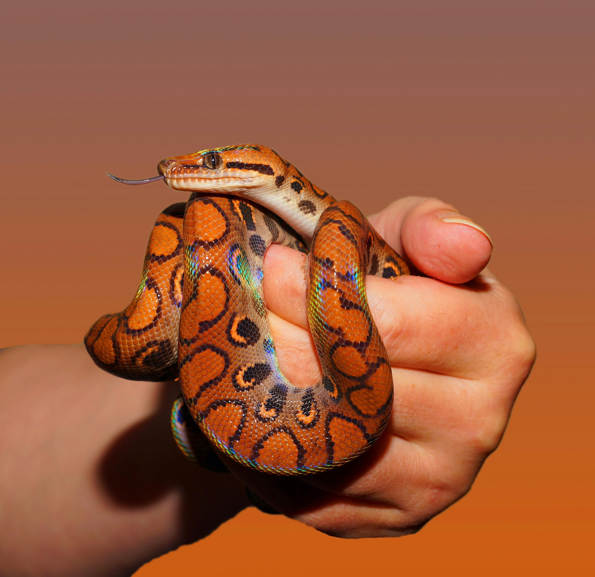
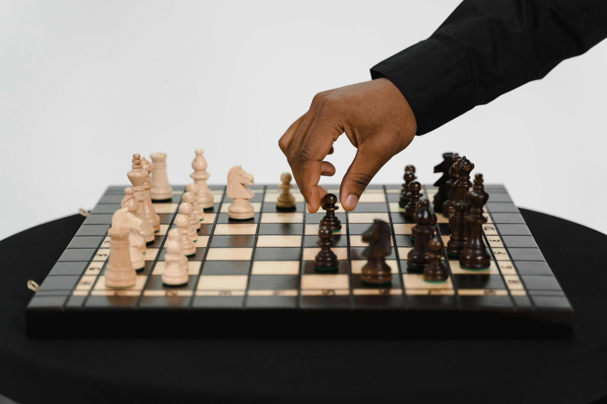
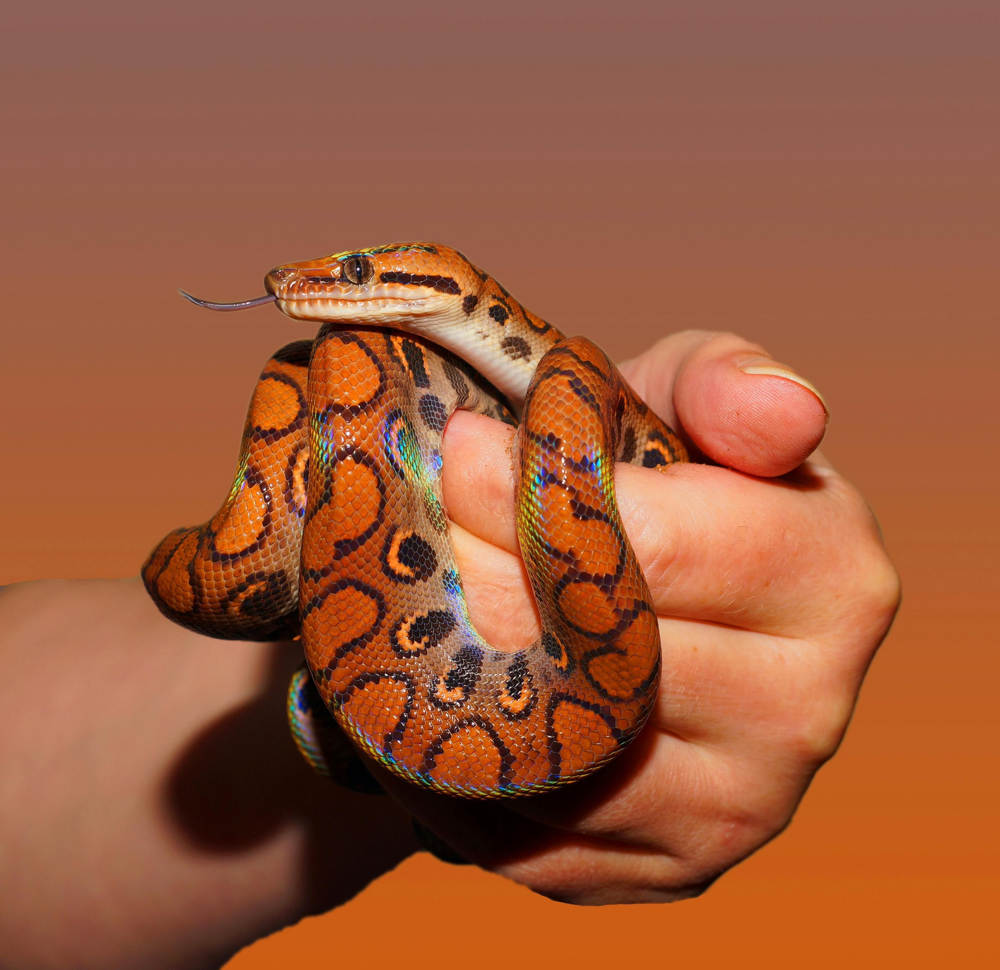
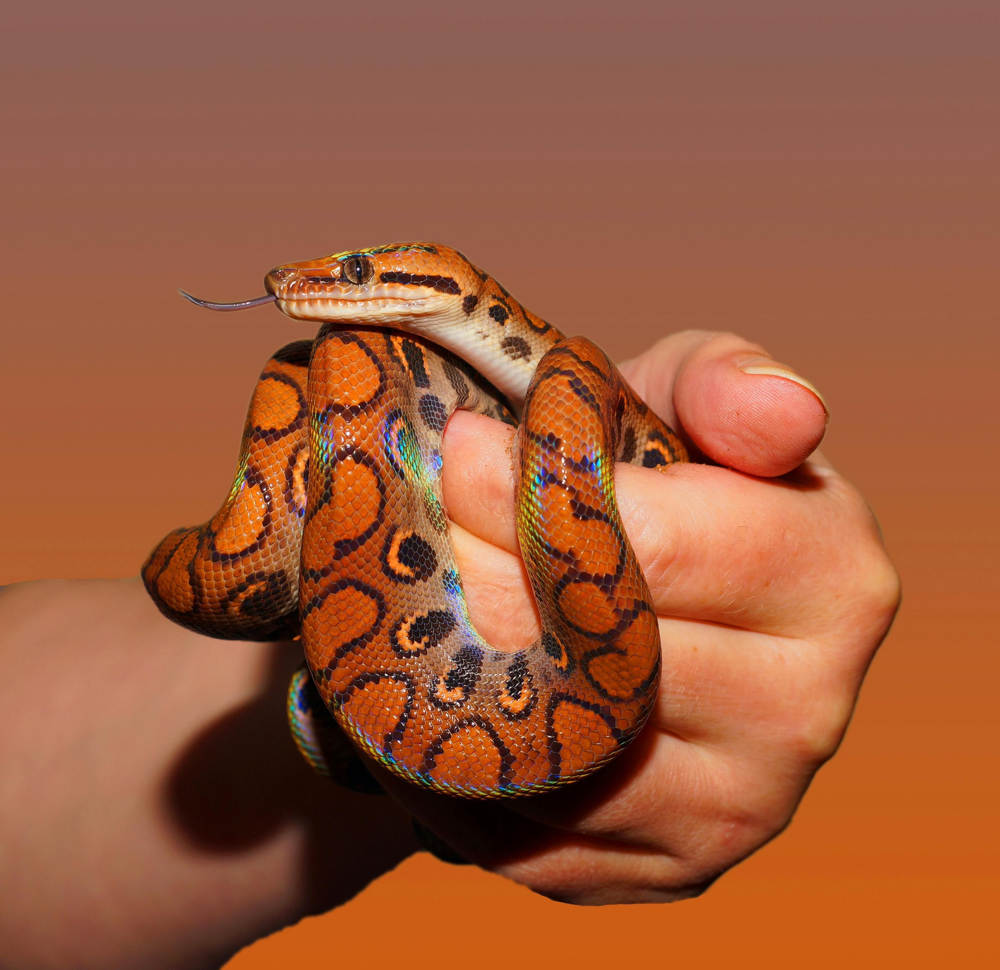
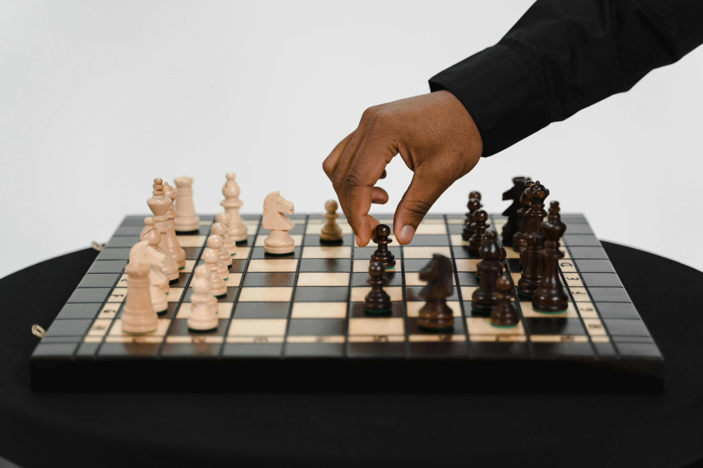
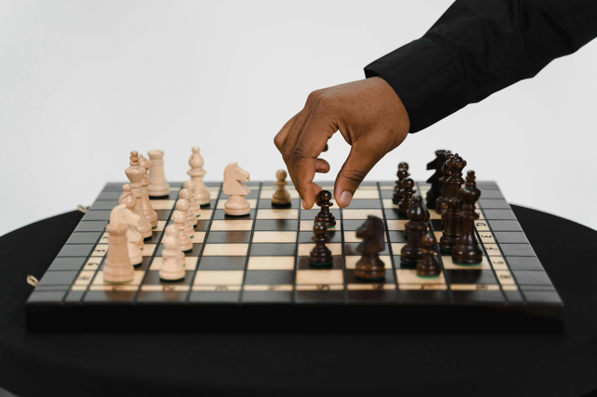

I have various hobbies. Here are listed the main ones - I skipped 'minor' pastimes.
So, not in the order of importance, but just in an alphabetical order, my hobbies are:
Programming - I am not a professional computer programmer, just like to play a bit with HTML and Python

Reading - fiction and non-fiction
Smart travelling - I do not like and avoid visiting hyped crowded touristy places; I prefer 'hidden gems'
Sports - gym, boxing, martial arts, chess (and not only these!)

Writing stories - I like to write fiction stories; maybe I'll publish them one day:-)
 



 
